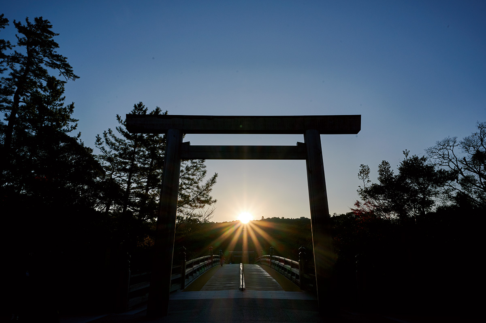
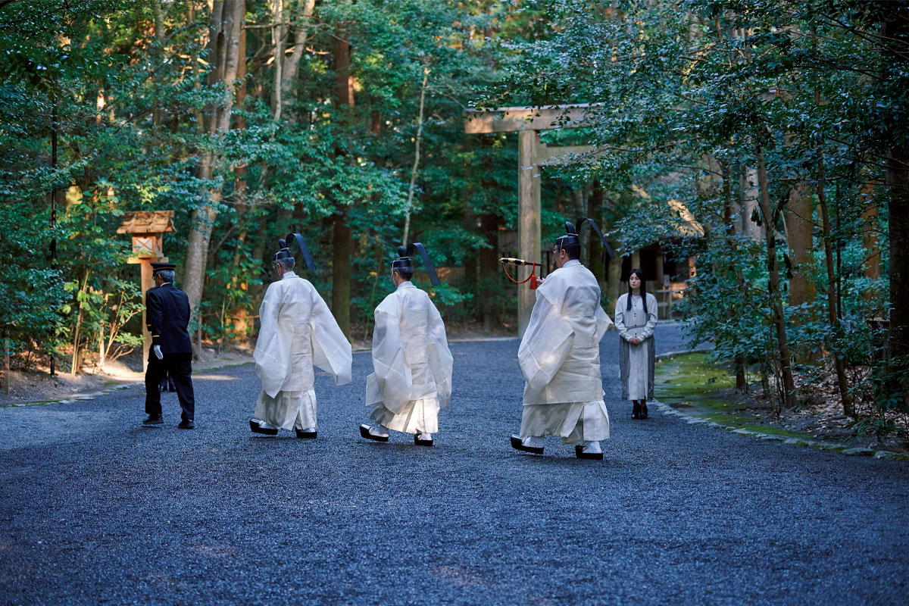
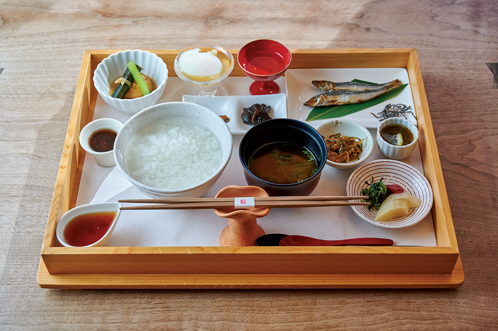
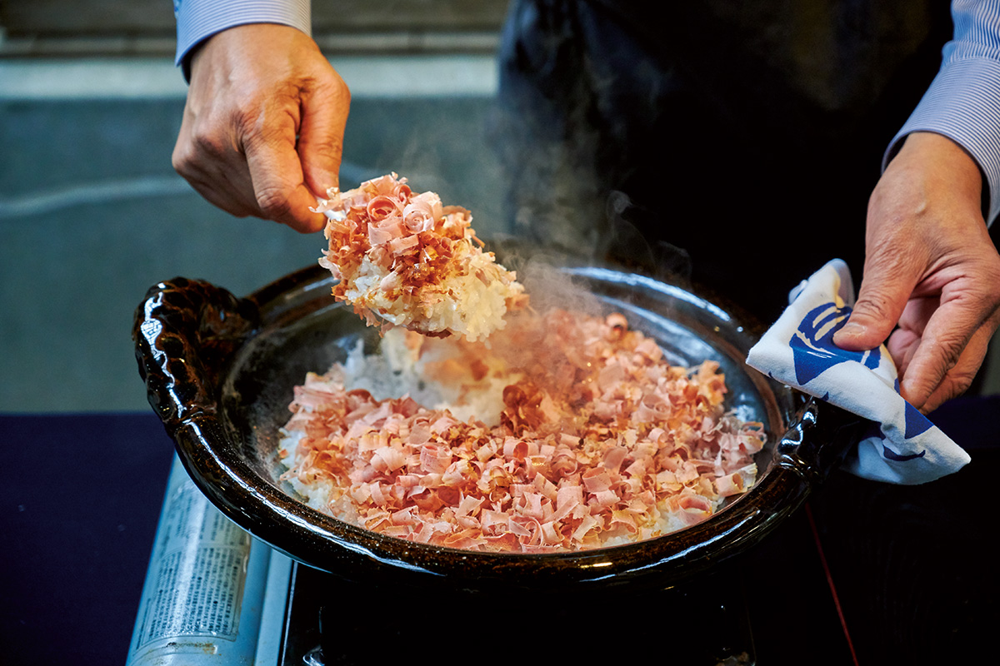
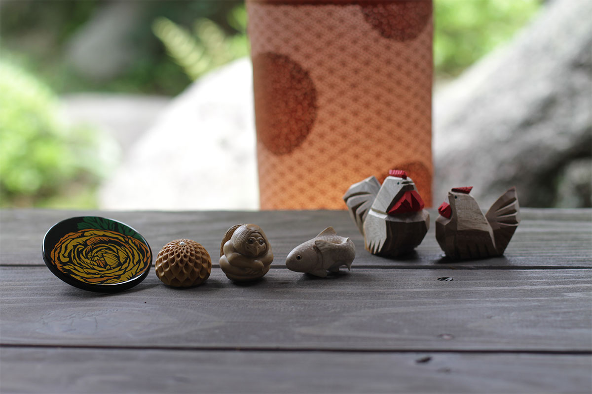
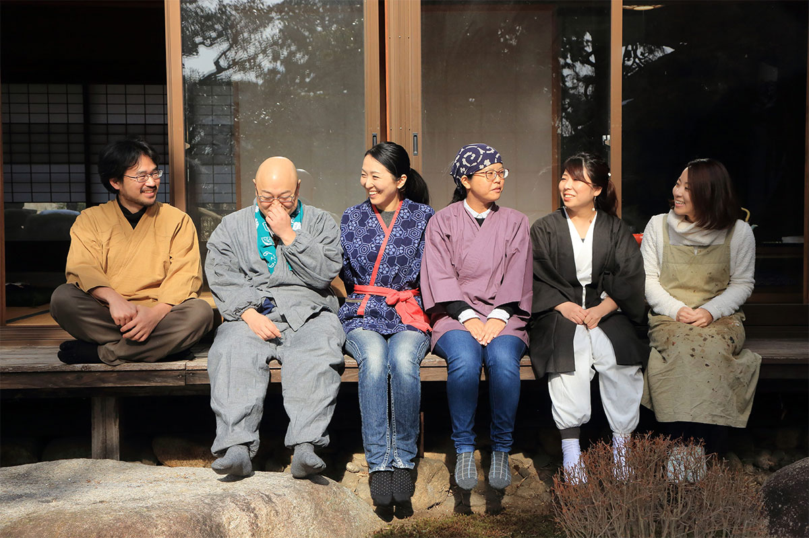
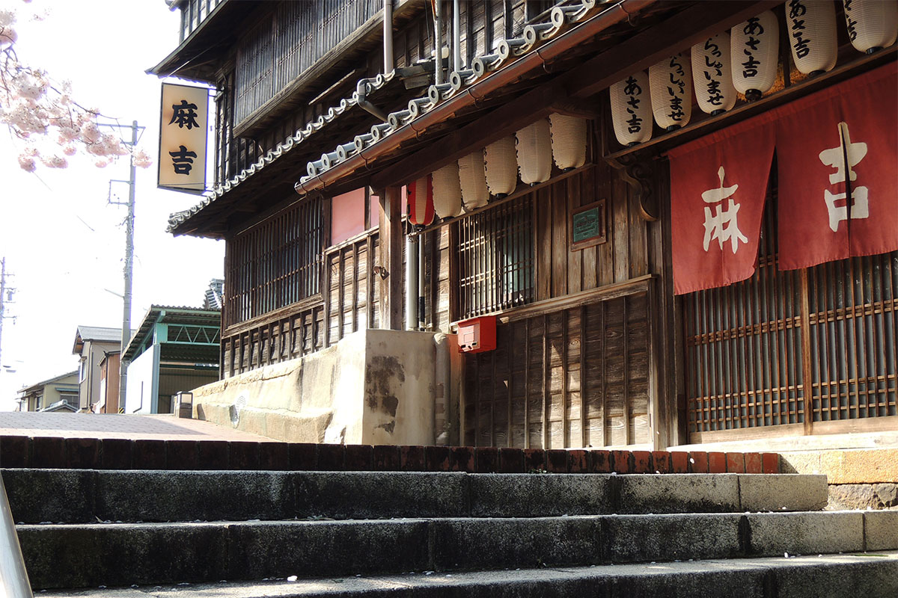
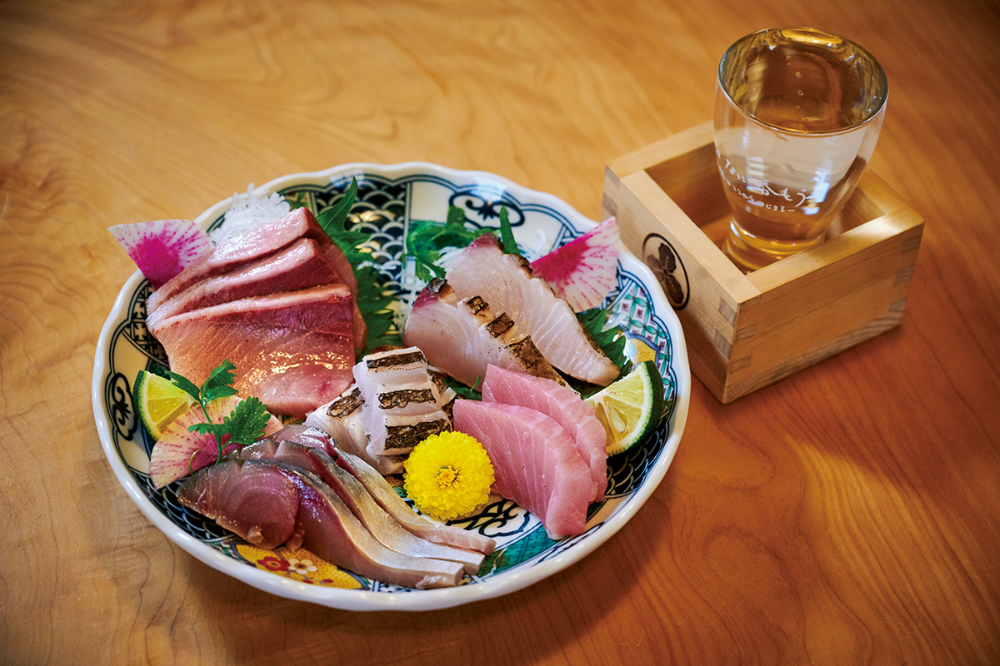

Префектура Миэ · Исэ и Сима · прогулка по городу
Город вокруг святилища Исэ: утренняя каша, сакэ и мастера нэцукэ, а на побережье Сима кацуобуси

К святилищу Исэ приходят рано утром, а после молитвы остаётся целый день. Город вокруг святилища веками жил паломниками, и он по-прежнему умеет их накормить, напоить и уложить спать.
Утро
Сначала святилище
Святилище Исэ (официально просто Дзингу) объединяет 125 святилищ, и главные среди них два. Во Внутреннем святилище Найку почитают Аматэрасу-омиками, богиню солнца и прародительницу императорского рода. Во Внешнем святилище Гэку почитают Тоёукэ-но омиками, богиню, которая готовит для Аматэрасу еду. За год здесь проходит около 1500 обрядов, от большого праздника урожая до ежедневного подношения пищи.
Этот ежедневный обряд можно увидеть утром в Гэку. Еду для богов готовят на священной кухне и относят в особый зал, где её подносят с молитвой о мире в стране и покое народа. Так происходит дважды в день, утром и вечером, и, как говорят в святилище, без единого пропуска больше 1500 лет. На подносе рис, соль, вода, сакэ, кацуобуси и дары моря, овощи и фрукты по сезону.

После обряда служители едят подношения сами: общая трапеза богов и людей считается сутью праздника. Этот ритм удобно перенять и путешественнику. Утром молитва, потом завтрак, а вечером, когда время, по старым представлениям, принадлежит богам, можно отдохнуть за чашкой сакэ.
Завтрак
Каша в «Асора-но тяя»
На главной улице, ведущей к Внешнему святилищу, стоит лавка «Исэ Сэкия». Она торгует закусками к сакэ и деликатесами, среди которых есть и морское ушко аваби, одно из подношений святилищу. На втором этаже работает чайная «Асора-но тяя», и по утрам здесь подают кашу.
Комплект «Микэ-но аса-каю» назван в честь подношений богам. Это каша из риса сорта «Исэхикари» с подобранными к ней деликатесами, в 2021 году она стоила 1230 иен. После утренней молитвы горячая каша согревает лучше всего.

«Асора-но тяя»
- Адрес
- префектура Миэ, Исэ, Хонмати, 13-7, «Исэ Сэкия», 2-й этаж
- Телефон
- +81 596-65-6111
- Часы работы
- утренняя каша 7:30–10:00, обед 11:30–14:30
- Выходные
- среда
За городом
Кацуобуси из Накири
Кацуобуси, вяленый и копчёный тунец-бонито, лежит на подносе богов каждый день. Его настоящий вкус можно узнать уже за пределами Исэ, в соседнем городе Сима: в рыбацком порту Накири на мысе Даио. Мастерская «Кацуо-но Тэмпаку» делает кацуобуси для известных поваров, а в её коптильне отваренную рыбу коптят на ветках дуба убамэгаси. Ветки берут при прореживании дубового леса.
Хозяин мастерской рассуждает так: если ухаживать за лесом, море будет здоровым, а в здоровом море вырастет хороший бонито, на котором держится вся кухня. На экскурсии здесь рассказывают о старинном способе копчения и о культуре кацуобуси в Накири, дают попробовать бульон и рис из глиняного горшка донабэ, щедро посыпанный стружкой «хонкарэбуси», выдержанного кацуобуси, только что снятой с бруска.

Экскурсия стоила 2000 иен в 2021 году, записываться нужно заранее.
«Кацуо-но Тэмпаку», коптильня
- Адрес
- префектура Миэ, Сима, Даио-тё Накири, 393
- Телефон
- +81 80-2612-3801 (будни 9:00–17:00)
- Выходные
- среда, воскресенье
- Цены / Вход
- экскурсия 2000 иен, только по записи
Ремесло
Мастера группы «Токовака»
Слово «токовака» означает «вечно молодой»: так в Исэ говорят о святилище, которое раз в 20 лет отстраивают заново. Этим словом в 2012 году назвали свой проект молодые мастера традиционных ремёсел Исэ. Их шестеро, и работают они в четырёх техниках: нэцукэ, бумажные трафареты исэ-катагами, резьба одним ножом итто-бори и лаковое искусство. Мастера проводят мастер-классы и показывают свою работу, чтобы о ремёслах узнало больше людей.


Нэцукэ в эпоху Эдо служили застёжкой: на шнуре от пояса подвешивали коробочку для лекарств или кошелёк, а нэцукэ удерживал его за поясом. Нэцукэ из Исэ режут из самшита с горы Асама, что возвышается над городом. Фигурки совсем маленькие, но резьба покрывает их со всех сторон, и в каждой есть шутка.
Работы участников «Токовака» постоянно выставлены в салоне Kanechika. Он находится напротив ножевой лавки Ise Kikuichi на улице, ведущей к Внешнему святилищу, и там же проходят уроки резьбы нэцукэ.
Ise Kikuichi Kanechika
- Адрес
- префектура Миэ, Исэ, Хонмати, 6-4, здание «Сярэо», 2-й этаж
- Телефон
- +81 596-63-5410
- Часы работы
- 10:00–18:00
- Выходные
- среда
Ise Kikuichi
- Адрес
- префектура Миэ, Исэ, Хонмати, 18-18
- Телефон
- +81 596-28-4933
- Часы работы
- 9:00–17:00
- Выходные
- без выходных
- Сайт
- isekikuichi.com
Ночлег
Рёкан Асакити на дороге паломников
Между Внешним и Внутренним святилищами проходит старая дорога паломников. В эпоху Эдо на её отрезке в квартале Фуруити стояли дома развлечений, театры и гостиницы, и здесь шумели толпы путников, пришедших в Исэ издалека. Из всех тех заведений до сих пор работает только рёкан Асакити, которому больше 200 лет. Когда-то это был ресторан, где паломники после молитвы устраивали «сёдзин-отоси», праздник окончания поста.

Деревянное здание стоит на крутом склоне и включено в государственный реестр культурных ценностей. Построено оно в стиле «кэнгай-дзукури», на сваях над обрывом, как знаменитый храм Киёмидзу-дэра в Киото. Лестницы и крутые спуски вдоль дома и небольшой музей с утварью сохраняют облик эпохи Эдо. В 2021 году ночь с ужином и завтраком стоила от 13 800 иен с налогом и сервисным сбором.
Рёкан Асакити
- Адрес
- префектура Миэ, Исэ, Наканоти-тё, 109-3
- Телефон
- +81 596-22-4101
- Цены / Вход
- ночь с ужином и завтраком от 13 800 иен (с налогом и сбором)
Вечер
Сакэ в «Морисите»
Вечером стоит вернуться к станции Исэси. Бар «Морисита» держит винная лавка из соседнего Тобы, и сакэ здесь только из префектуры Миэ. Три сорта для дегустации можно выбрать самому, в 2021 году такой набор стоил 1200 иен. К сакэ берут сашими из рыбы по сезону, например жирной скумбрии савара: ассорти стоило 2145 иен. Рекомендуем и блюда из свинины «Мацусака».

«Морисита»
- Адрес
- префектура Миэ, Исэ, Хонмати, 2-3
- Телефон
- +81 596-64-8080
- Часы работы
- 17:30–23:00 (последний заказ 22:30)
- Выходные
- воскресенье
Если хочется остаться у моря, в Исэ-Сима есть две старые курортные гостиницы: Shima Kanko Hotel, открытая в 1951 году над заливом Аго и принимавшая саммит G7 в 2016 году, и Toba International Hotel 1964 года, где до сих пор пекут чизкейк по рецепту первых лет.
Как добраться
- Как добраться
- от станции Нагоя до станции Исэси около 1 часа 20 минут на экспрессе Кинтэцу, от станции Осака-Намба около 1 часа 45 минут. От станции Исэси до Внешнего святилища около 5 минут пешком, до Внутреннего святилища около 15 минут на автобусе.
Фото: Хироси Абэ, Аканэ Ямакита.